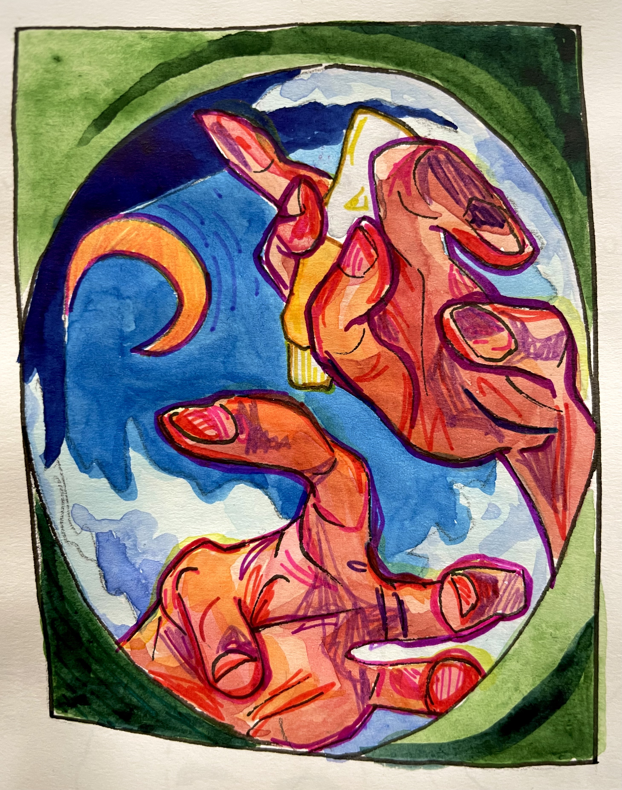
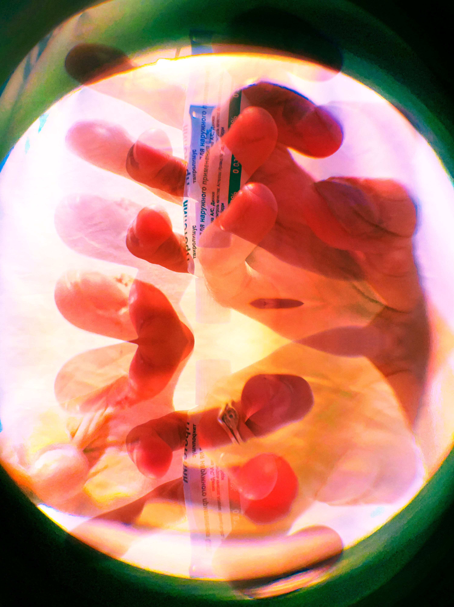

Hands Study
June 2025
Watercolor, fineliner pens, and colored pencil
iPhone 12 camera, fisheye lens clip, Adobe Lightroom


These joint pieces culminate in a project centered on self-portraiture. The depicted hands are my own,
with the intention of conveying my interiority through my exteriority. Since childhood, I've had the
bad habit of picking at my nails when feeling anxious, and I sought to capture the weird/distorted nature
of my damaged fingers. In both realms of photography and illustration, realism was not my priority; moreso
the process focused on explorations in color and shape.